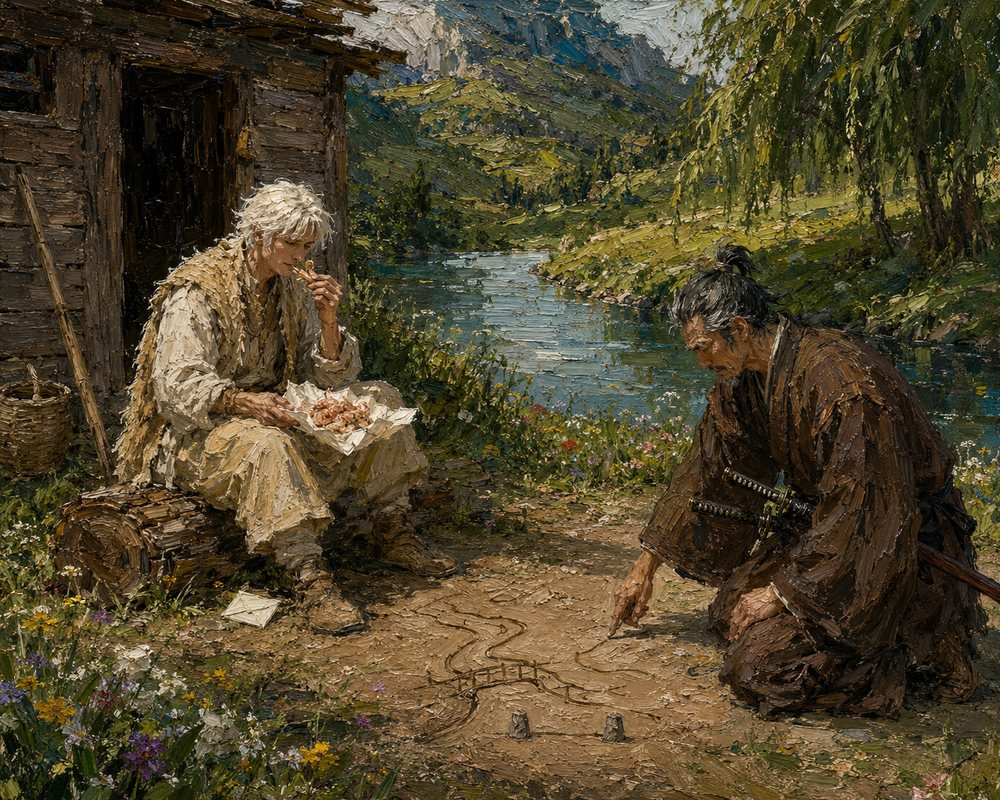

Record 10 of 10
The hermit of Val Muta
In a green hollow of Val Muta the hermit Vara eats salted river shrimp from a twist of paper while Tomobe no Higaide kneels in the dust and draws a road, a bridge and two stones with a line between them; the hermit agrees.
In a green hollow beside a bright river bend under willows, a pale slim man with white hair in an undyed wool jerkin and a sheepskin vest sits on a log outside a log shack eating a shrimp from a paper twist in his lap, a folded square of paper on the ground beside his foot, while a lean grey-templed man in a brown tunic with two swords at his hip kneels in the dust and draws with one finger a winding road, a bridge and two small stones with a line between them, wildflowers in the grass and a wicker basket and a pole against the shack.